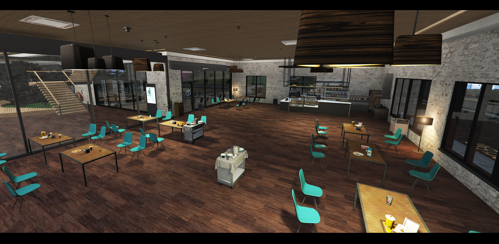
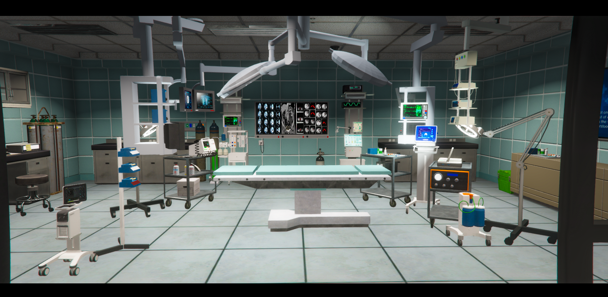
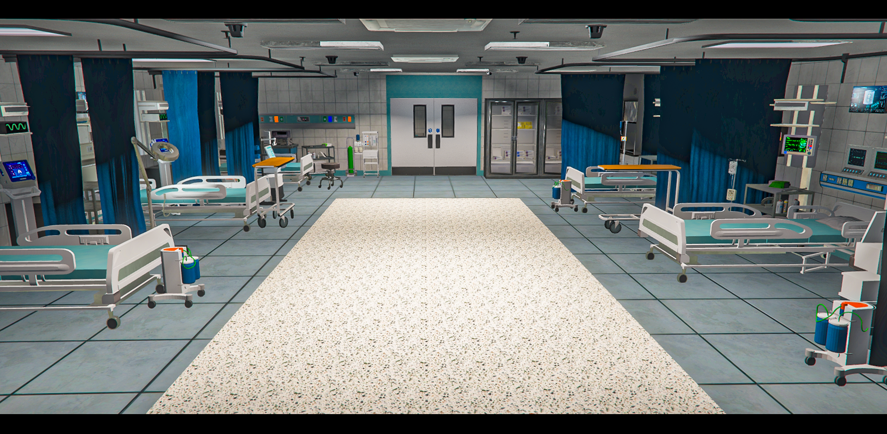
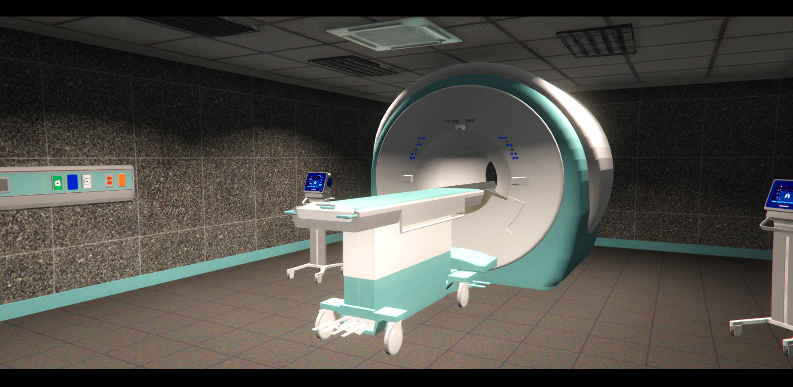
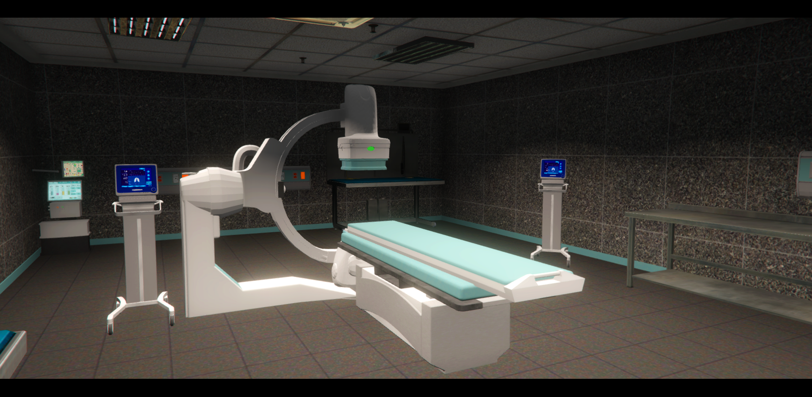
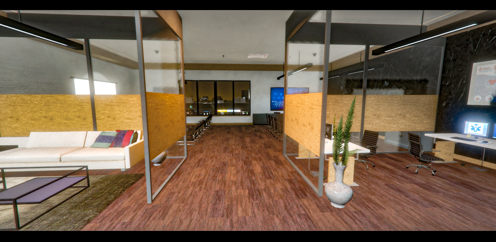
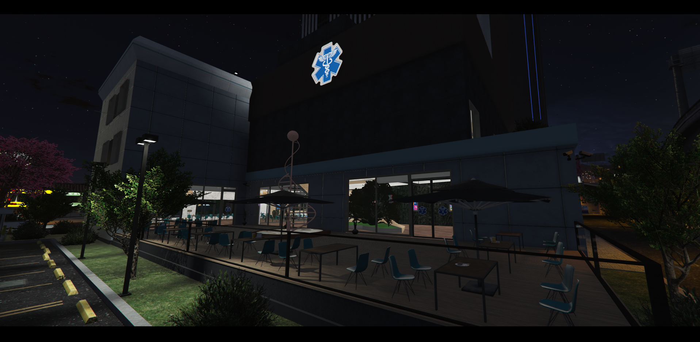

白塔醫院大廳
這裡是希望的起點，每一次踏入，都是為了守護生命。
中央藥局
每一份處方，都是對健康的細心守護。

白塔咖啡廳
為每一位辛勞的夥伴與家屬，獻上溫暖時光。

診間區域
在問診與傾聽中，我們找回安心與健康。

手術準備區
準備就緒，讓每一場手術更穩妥安心。

手術室
專業與冷靜交會，守護生命的關鍵時刻。

加護病房
24 小時不間斷的守護，讓希望不曾離開。
X 光檢查區
透視每一個細節，為診斷提供最清晰的方向。

MRI 檢查室
精密影像，為每一次判斷提供堅實依據。

血管攝影室
探索血流的地圖，尋找治療的道路。
研究與教學解剖室
每一份捐贈，都是醫學進步的無聲貢獻。

遺體暫存室
謹慎與尊重，是我們對生命最後的致敬。
住院病房
休養與陪伴交織，讓康復之路更有溫度。

醫師休息區
短暫的休息，是為了更穩定的照護。

戶外咖啡座
在星光下啜飲一杯溫熱，享受屬於深夜的靜謐。
最新公告
- 04/20新增「戰地行動包」訓練課程
- 04/15成立創傷中心（TC）
- 04/10開放實習醫護線上申請
醫療團隊預覽

史蒂芬·史傳奇
院長 / 頸動脈剝離
肖堯
副院長 / 創傷性氣血胸
阿鳥
急診科主任 / 急重症專家
黃曉翔
創傷中心主任 / 創傷專家